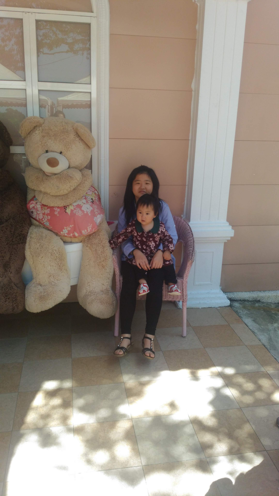
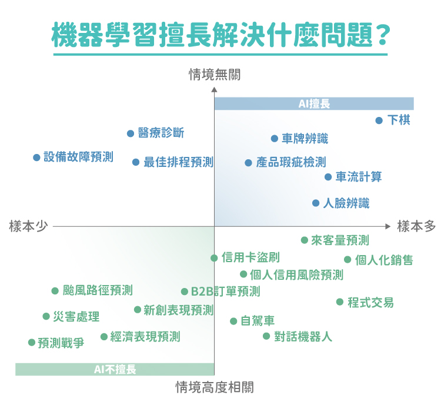

基本資料
| 姓名 |
個人照片 |
學號 |
學經歷 |
| 王佩蓁 |
 |
111034005 |
國小:鳳鳴國小
國中:福豐國中
高中:新興高中
|
|
自我簡介:
我叫王佩蓁，來自桃園，目前就讀於亞洲大學會計與資訊學系一年級，
生日是6月12日，星座:雙子座，興趣是看小說、聽音樂或是手作東西，
個性:樂觀、細心、還有點害羞。
也因父母離異，使我從小培養出了獨立自主。
希望在未來四年中，我可以順順利利的完成所有課程及考試。
最後祝福大家期中ALL PASS!
111-1修課列表
| 一 |
二 |
三 |
四 |
五 |
| |
文學賞析 |
科技應用與生活 |
健康與生活 |
共通英文 |
| |
文學賞析 |
科技應用與生活 |
健康與生活 |
共通英文 |
| |
體育 |
|
|
|
| |
體育 |
|
|
|
| 實作英文 |
|
共通英文 |
經濟學 |
|
| 實作英文 |
|
|
經濟學 |
|
| 會計學 |
資訊與科技 |
學輔時間 |
歷史與文化 |
經濟學 |
| 會計學 |
資訊與科技 |
|
歷史與文化 |
經濟學 |
| 會計學 |
服學-實作課 |
服學-實作課 |
服學-實作課 |
|
人工智慧應用新聞
人工智慧是什麼？
簡單來說，人工智慧就是使電腦可以透過學習人類的智慧來
完成任務，透過情境的參與，學習處理不同的狀況，進而發展
出應對的方式，且可以分析不同的情況自行進行調整及優化，
人工智慧是可以感知、學習、推理、協助決策的工具。
人工智慧實例
近年來人工智慧除了企業愛用，也逐漸進入我們的生活中，常見的例子有：
• 智慧型手機
•串流影音/瀏覽器的演算法
•智慧型家電
AI人工智慧發展
自從 1950 年代電腦出現以後，科學家就不斷思考，如何使電腦更像人類，例如能夠自行思考、判斷對錯、
以致能夠幫助人類處理所有工作，然而發展過程並不順利，中間歷經幾次失敗。若以技術發展為分界，可以大致分為三個階段：
I.AI人工智慧：符號邏輯：
1950 年代，電腦剛問世，科學家們試圖想把人類的知識及思考模式放入電腦，但最終因人類都沒辦法完全了解自己的思考過程
，根本無法將人類的思考脈絡、語言結構、決策能力具體的寫成電腦方程式，最後以失敗告終。
II.AI人工智慧：專家系統：
1980 年代，人類退而求其次，不再將思考模式寫入電腦，而是試圖將人類定義好的規則寫入電腦中，但最後還是失敗了，
原因是規則永遠不會停止改變，比如說天氣狀況的走向、地震預測、火災警報，永遠都充滿變數，
就算將所有狀況寫成方程式，也難保不會有未曾見過的情況，治標不治本，這是人類在人工智慧發展上遇到的第二次失敗。
III.AI人工智慧：機器學習：
第三階段的發展約始於 2010 年，科學家們認為，既然無法將思考模式寫入程式，也無法將所有狀況告訴電腦，
那不如將「學習」的能力交給電腦，真正實現智慧的展現。於是科學家僅教會電腦「識字」，再將大量的狀況丟給電腦，讓機器自行判斷，
於是神奇的事情發生了，電腦找到了學習的邏輯，能夠自行進行優化更正，使人工智慧的發展有了極大的進展，且還在不斷的進步。
機器學習依照問題界定的方式，可以分為四種類型：
•監督式學習：告訴人工智慧正確的答案，讓機器只從成對的答案中尋找規律，並做出決策，此方法對人類來說最辛苦，對機器來說較為簡單。
•非監督式學習：與監督式相反，不告訴人工智慧答案，使機器自行分類辨識，此方法對於機器來說難度較高，較容易有誤差。
•半監督式學習：只對於少部分答案進行標註，讓機器自行判斷剩餘答案，透過類似於練習的模式，使機器自行熟悉邏輯。
•增強式學習：對人工智慧施以環境學習，並以互動方式「反饋」機器給予的答案，人工智慧便會以反饋的好壞來當成自行優化的依據
，若想達成非監督是學習，增強式學習便是十分重要的敲門磚。
新聞來源

新聞心得說明
看完這篇新聞，讓我更加了解了人工智慧的定義、應用、展望等等。
人工智慧的實際案例比如:智慧型手機、家電等等。在未來某些職業也可能會被AI所取代，
如:分析人員、電話銷售等。AI的應用很廣泛，可以應用在汽車、電腦、手機等。
汽車的應用大概是應用在自動駕駛上，手機則應用在語音助理。
他還可以應用於投資理財，將過去的數據作為分析依據來進行投資理財。